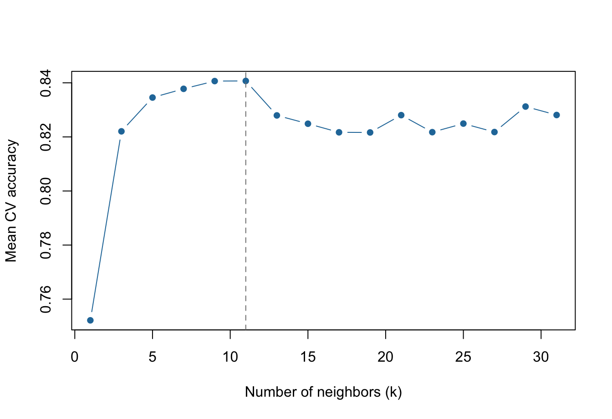

Exercise 1 Modify the KNN demo to select the best number of neighbors (k) using five-fold cross-validation rather than one training/validation split.
Keep the same 20% test set as in the demo. Perform cross-validation only on the other 80% of the data.
For each candidate k, fit the classifier on four training folds and calculate overall accuracy on the remaining fold. Repeat for all five folds.
Calculate the mean accuracy and standard deviation across folds for each k, and plot mean CV accuracy against k.
Select the best k based on mean CV accuracy, refit KNN on all 80% of the development data, and evaluate its accuracy on the untouched 20% test set.
Compare your result with the single-validation-split demo: did you select a different k? How do the test accuracies compare? Cross-validation does not guarantee a higher test accuracy.
Important: KNN depends on distance. For every CV fold, calculate the scaling parameters from the training folds only, then apply that transformation to the validation fold. Do not use test observations when fitting the scaler or selecting k.
Hint: Use splitTools::create_folds(..., k = 5, invert = TRUE) to obtain validation-fold row indices. Training rows are the remaining observations. Keep the same candidate k values as in the demo.
randseed <-123splits <-partition( data_input$`BMI>30`,p =c(other =0.80, test =0.20),seed = randseed)data_other <- data_input[splits$other, ]data_test <- data_input[splits$test, ]# Return validation indices. Their complements are training indices.validation_folds <-create_folds( data_other$`BMI>30`, k =5, invert =TRUE, seed = randseed)# Use the same candidate values as the demo.k_values <-seq(1, min(31, nrow(data_other)), by =2)# Ensure each k is possible in every training fold.smallest_train_size <-min(vapply(validation_folds,function(valid_idx) nrow(data_other) -length(valid_idx), integer(1)))k_values <- k_values[k_values <= smallest_train_size]
Evaluate every k across five folds
n_folds <-length(validation_folds)cv_accuracy <-matrix(NA_real_, nrow =length(k_values), ncol = n_folds,dimnames =list(paste0("k=", k_values), paste0("Fold ", seq_len(n_folds))))for (i inseq_along(k_values)) {for (f inseq_len(n_folds)) { valid_idx <- validation_folds[[f]] train_idx <-setdiff(seq_len(nrow(data_other)), valid_idx) fold_train <- data_other[train_idx, ] fold_valid <- data_other[valid_idx, ]# Fit preprocessing only on the four training folds. scaled <-scale_using_train(fold_train, fold_valid) model <-kknn(`BMI>30`~ ., train = scaled$train, test = scaled$new,k = k_values[i], kernel ="rectangular", scale =FALSE ) cv_accuracy[i, f] <-mean(fitted(model) == scaled$new$`BMI>30`) }}cv_mean <-rowMeans(cv_accuracy)cv_sd <-apply(cv_accuracy, 1, sd)cv_results <-data.frame(k = k_values, mean_accuracy = cv_mean, sd_accuracy = cv_sd)print(cv_results)
plot( k_values, cv_mean, type ="b", pch =16, col ="#2578A8",xlab ="Number of neighbors (k)", ylab ="Mean CV accuracy")k_best <- k_values[which.max(cv_mean)]abline(v = k_best, col ="grey50", lty =2)cat("Best k (5-fold CV):", k_best, "\n")
Best k (5-fold CV): 11
cat("Mean CV accuracy:", max(cv_mean), "\n")
Mean CV accuracy: 0.8407041
cat("SD across folds:", cv_sd[which.max(cv_mean)], "\n")
SD across folds: 0.02988664
# Fit on all development observations; test is used only once.final_scaled <-scale_using_train(data_other, data_test)model_final <-kknn(`BMI>30`~ ., train = final_scaled$train, test = final_scaled$new,k = k_best, kernel ="rectangular", scale =FALSE)test_accuracy <-mean(fitted(model_final) == final_scaled$new$`BMI>30`)cat("Final test accuracy (5-fold CV):", test_accuracy, "\n")
Final test accuracy (5-fold CV): 0.75

Figure 1: Mean five-fold cross-validation accuracy across values of k.